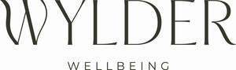

Trade Mark Journal No.2025/039 26 September 2025
UK00004264460 15 September 2025 (11,44)

- Class 11
- Hair steamers for use in beauty salons; Hair steamers for beauty salon use; Hair driers for use in beauty salons; Spa baths; Whirlpool spa bath installations; Spa baths [vessels]; Steam baths, saunas and spas; Jet nozzles for generating massage currents in spa baths; Spas [heated pools]; Massage bath installations; Hydrotherapy baths; Sauna bath installations; Jets for hydrotherapy baths; Hydromassage tubs; Whirlpool baths; Whirlpool tubs; Hydromassage bath apparatus; Saunas; Steam facial apparatus [saunas]; Sauna heaters; Shower tubs; Sitz-baths (Bath tubs for -); Sauna apparatus; Shower baths; Swimming pool heaters.
- Class 44
- Beauty salons; Salons (Beauty -); Beauty care; Beauty treatment; Beauty salon services; Salon services (Beauty -); Beauty consultation; Beauty counselling; Beauty spa services; Beauty consultancy; Hygienic and beauty care; Beauty care for animals; Services of a hair and beauty salon; Beauty care of feet; Human hygiene and beauty care; Beauty care services; Beauty therapy services; Beauty treatment services; Facial beauty treatment services; Hygienic and beauty care for humans; Hygienic and beauty care services; Beauty salons for wig cutting; Beauty therapy treatments; Beauty care for human beings; Beauty treatment services especially for eyelashes; Beauty consultation services; Hygienic and beauty care for human beings; Consultancy in the field of body and beauty care; Beauty advisory services; Beauty consultancy services; Rental of equipment for human hygiene and beauty care; Beauty care services provided by a health spa; Provision of hygienic and beauty care services; Information relating to beauty care; Information relating to beauty; Consultation services relating to beauty care; Consultancy services relating to beauty; Providing information relating to beauty salon services; Providing information about beauty; Consultancy provided via the Internet in the field of body and beauty care; Rental of machines and apparatus for use in beauty salons or barbers' shops; Cosmetic make-up services; Skin care salons; Hair salon services for women; Cosmetic treatment services for the body, face and hair; Spa services; Spas; Health spa services; Medical spa services; Hire of inflatable spa pools; Provision of spa facilities; Tanning salon and solarium services; Massage; Hydrotherapy; Sauna services; Massage and therapeutic shiatsu massage; Hot stone massage therapy services; Massages; Manicure and pedicure services; Medical treatment services provided by a health spa; Pet beauty salon services; Slimming salon services; Massage services; Sun tanning salon services; Tanning (Sun -) salon services; Hydrotherapy services; Sports massage; Hydrotherapy home services; Infrared sauna services; Pedicure services; Foot massage services; Cosmetic body care services provided by health spas; Spray tanning salon services; Operation of sauna facilities; Airbrush tanning salon services; Thai massage services; Salon services (Hairdressing -); Hairdressing salon services; Providing sauna facilities; Equine massage; Tanning salons; Hot stone massage; Nail salon services; Hair dressing salon services; Hair salon services; Thai massage; Services of a solarium; Pregnancy massage services; Aromatherapy services; Providing hot tub facilities; Provision of sauna facilities; Sauna facilities (Provision of -); Reflexology services; Cosmetic facial and body treatment services; Reflexology; Provision of solarium [sun tanning] facilities; Canine massage; Health resort services [medical]; Manicure services; Salons (Hairdressing -); Hairdressing salons.
Wylder Wellbeing Ltd